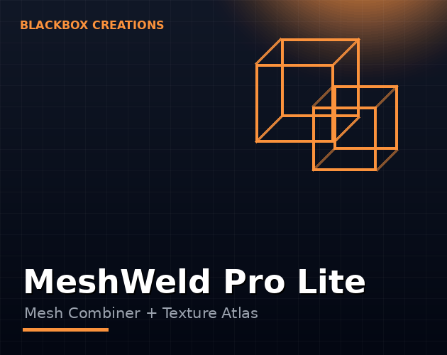

Tools / MeshWeld Pro Lite
Too many draw calls? MeshWeld combines your meshes and bakes their textures into atlases, so Unity renders more with less — one click, right in the Editor.
Instant download & priority support
One-time purchase · Instant download · Free minor updates
Buy nowAlso on the Unity Asset Store

Every separate mesh is a draw call, and draw calls are one of the most common Unity performance bottlenecks — especially on mobile and VR. Combining meshes that share materials (or baking them into a shared atlas) is the standard fix, and MeshWeld automates it.
Developers optimizing Unity scenes: mobile games, VR experiences, and anyone whose profiler is red on rendering. If you build environments from many small props, this pays for itself in an afternoon.
MeshWeld is built around the way Unity developers actually optimize: in short passes, between other tasks, without leaving the Editor. The workflow has four steps. First, select the static meshes you want to merge — a room full of props, a modular building kit, a batch of environment pieces. Second, run MeshWeld from the Editor. Third, the tool merges the geometry and bakes the source materials into a shared texture atlas, so the combined mesh keeps its look. Fourth, you get back fewer meshes, fewer materials, and fewer draw calls. There is no runtime code to integrate and no scene restructuring — it is a development-time operation: optimize once, ship the result.
Newcomers to draw-call optimization often assume merging meshes is the whole job. It is only half. In Unity, every unique material on screen is typically its own draw call, so ten meshes sharing ten materials merged into one mesh still cost you ten draw calls. The real win comes from reducing the material count alongside the mesh count — and that is what the texture atlas baker is for. By packing your textures into atlases, MeshWeld lets the combined mesh render with a fraction of the materials, which is where the dramatic draw-call drops come from.
The tool earns its price fastest on scenes built from many small static pieces: modular environments, prop-heavy interiors, stylized worlds assembled from kits. Mobile and VR projects feel the difference first, because those platforms have the least headroom for wasted draw calls. It is less useful for a single hero mesh (there is nothing to merge) or for skinned, animated characters — combining is a static-geometry technique, and honest tools say so.
The manual route — exporting meshes, merging them in a DCC tool, rebuilding materials, re-importing, fixing what broke — takes hours per batch and has to be repeated every time the art changes. MeshWeld compresses that into an in-Editor step you can rerun whenever the scene updates. The comparison is not really about quality; it is about whether optimization happens at all. The tool that takes minutes gets used. The pipeline that takes an afternoon gets postponed until the profiler is on fire.
Draw calls are the silent frame-rate killer: hundreds of small meshes mean hundreds of draw calls. MeshWeld Pro Lite merges meshes directly in the Unity Editor — including meshes with different materials, which it bakes into a single texture atlas — collapsing draw calls and speeding up your scenes. It is the one-click answer to how to combine meshes in Unity and how to reduce draw calls in Unity, at once.
MeshWeld Pro Lite is an Editor workflow tool — combine once during development and ship the optimized result.
Yes — the texture atlas baker packs your materials so the combined mesh keeps its look.
It depends on your scene. Prop-heavy environments with many small meshes and materials routinely see dramatic drops — that is exactly the case combining plus atlasing is designed for. Run Unity's profiler before and after on your own scene; the frame debugger will show you the difference directly.
Yes — the workflow is selection-based. You pick the meshes, so hero assets, dynamic objects, or anything you want left alone simply stays out of the selection.
Nothing, unless you say so. Combine onto new objects and keep your originals until you are happy with the result — standard safe practice for any destructive optimization.
Select the meshes and run MeshWeld — it merges them into one in the Editor, no scripts to write. It handles the case most scripts do not: meshes with different materials, by baking them into a shared texture atlas.
Yes — that is its signature feature. MeshWeld bakes the source materials into a single texture atlas as it merges, so the combined mesh draws in one call instead of dozens.
A texture atlas packs many small textures into one big texture. Since a draw call is per material as well as per mesh, atlasing lets merged meshes share a single material — turning fifty draw calls into one.
MeshWeld Pro Lite targets static meshes — the environment props, level geometry, and set dressing that make up the bulk of draw calls. For skinned or animated meshes, combine them before rigging or keep them separate.
Unity's static batching helps at runtime but still stores every mesh separately and cannot merge materials. MeshWeld combines at the source: fewer meshes, fewer materials, smaller builds — and it stacks with batching rather than replacing it.